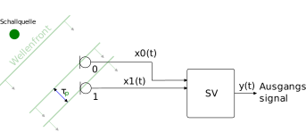
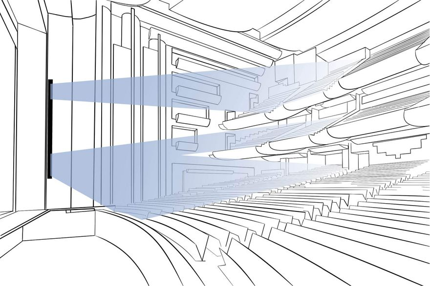

\(w_0 = w_1 = \tfrac{1}{2}\)
Wegunterschied:
\[ \color{blue}x = d \cdot \sin\left(\color{green}\theta\right) \]
Schallgeschwindigkeit: \[ c \approx 344 \tfrac{\text{m}}{\text{s}} \]
Zeitversatz: \[\begin{eqnarray} %c &\approx & 344 \tfrac{\text{m}}{\text{s}}\\[2ex] \tau_\color{green}{p} &=& \frac{\color{blue}x}{c}\\ & = & \frac{d \cdot \sin\left(\color{green}\theta\right)}{c} \end{eqnarray}\]
Zeitbereich, Signal von Mikrofon \(m\):
mit
Frequenzbereich:
mit
Zeitbereich:
mit
Frequenzbereich:
mit
Mit \(w_m = \frac{1}{M}\):
Verhältnis von Ausgang zu Eingang: \[ H(\omega) = \frac{Y(\omega)}{\color{green}{S}(\omega)} = \bbox[5px, border: 2px solid green]{\frac{1}{M}\sum_{m=0}^{M-1}e^{-j\omega\cdot m\cdot\tau_\color{green}{p}}} \]
\[ H(\omega) = \frac{1}{M}\sum_{m=0}^{M-1}e^{-j\omega\cdot m\cdot\tau_\color{green}{p}} \]
mit \(\tau_\color{green}{p} = \frac{d\cdot \sin \left(\color{green}{\Theta}\right)}{c}\):
\[ H(\omega, \color{green}{\Theta}) = \frac{1}{M}\sum_{m=0}^{M-1}e^{-j\omega\cdot m\cdot\frac{d\cdot \sin \left(\color{green}{\Theta}\right)}{c}} \]
Frequenz- und Richtungsabhängigkeit in einem Bild:
Zeitbereich: \[ \begin{eqnarray} y_\color{red}{\text{s}}\left(t\right) &=& \sum_{m=0}^{M-1}w_m \cdot x_m\left(t+m\cdot\tau_\color{red}{s}\right)\\ % &=& \sum_{m=0}^{M-1}(w_m\cdot \delta(t+ m \cdot \color{red}{\tau_s}))\ast x_m\left(t\right)\\ % & = & \sum_{m=0}^{M-1}w_m \cdot s\left(t + m\cdot \color{red}{\tau_s}\right)\\ %& = & \mathbf{w}^T\mathbf{x}(t) \end{eqnarray}\]
mit
Frequenzbereich:
mit
Abbildung 1: Beamforming im Freisprech-Kopfhörer (Sony Deutschland)
Abbildung 2: Sennheiser TeamConnect Ceiling 2 (Sennheiser 2023)

Abbildung 3: Beamforming im Konzertsaal (Fohhn Audio AG)
Mikrofonbeamformer…